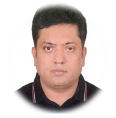

pijushkumer@gmail.com,
pkumer@grameenphone.com
+8801711505136
Grameenphone Ltd,
Bogura Regional office,
Betgari,Banani
Bogura, Bangladesh.
______CARRIER SUMMERY______
Master of Business Administration (H.R.M) with Twenty Two and Half years’ experience in Telecommunication Network Operation sector with expertise in & clear understanding of Core Power,BTS,PDH, Radio, Router, Optical Fiber communication system, generator, & rectifier system.
_____CARRIER OBJECTIVE_____
Explore the own potentiality and improve the ability through continuous learning & relearning and secure a position in a Telecom Industry where I can apply my aptitude, engineering skills backed by leadership quality to exhale myself even further and help the organization for reaching a new height.
______COMPUTER SKILL_______
Acceptable expertise in MS Windows, MS Office,
__________HOBBIES___________
Electronics project.
Sports such as Cricket, Badminton etc.
__________STRENGTH___________
Hardworking, Honest,Flexible, Patient, Understanding.
Capable of Maintaining Good Inter-personal Relationship.
Self-Motivated, Fast Learner.
_______PERSONAL DETAILS_______
Father’s Name: Late Kamalindu Ghosh
Mother’s Name: Late Ava Rani Ghosh
Permanent Address: Holding No#250-2 Zia Sishu Park Road, Paba Notun Para, Nowdapara, Rajshahi-6203
Mailing Address: Flat #3B, Sadia Garden, Shahid Khokon Road, Jolewsharitola, Bogura-5800
Sex :Male
Marital Status: Married
Date Of Birth: 1st November,1976
Passport No: W 0068453
____ REFERENCE ____
Nandan Kumar Shaha
Circle Technology Head, Sylhet
Grameenphone Ltd.
Mob: 01711506156
Email: nkshaha@grameenphone.com
Md. Zakir Hasan
Circle Technology Head, Rajshahi
Grameenphone Ltd.
Mobile: +880-1711-505647
E-mail: zakir@grameenphone.com
PIJUSH KUMER GHOSH
Lead Engineer
________________PROFESSIONAL EXPERIENCE_________________
Grameenphone Ltd. Bangladesh (A concern of TELENOR)
Lead Engineer,
Regional Operation: (01 December, 2014 to Present)
Ensure the application of different processes & procedures guided by management to maintain core location. Analyze equipment fault trend and ensuring emergency fault handling whenever required. Ensure monthly PM & regular battery health checkup of all core nodes Ensuring routine testing of firefighting system as a proactive measure. Arrange training to develop expertise in core power system for regional engineers with the help of EMPS. Power System Deployment & Maintenance for IT Data Center and Data Center Recovery. Cooling and Other Infrastructure Deployment & Maintenance for IT Data Center and Data Center Recovery.
•
Senior System Engineer, Regional Operation, Network Operation (20th May 2010 – 30th November’2014))
Sub Center Head of Regional O&M Power
Deputy Superintend Engineer (13th June 2007 – 20th May 2010
Engineer (31st Junuary’2002- 19th May’2007) Grameenphone Regional Operation, Rajshahi
Team Leadership: Lead the team in fault handling of power part of Core, GSM & Transmission network and Ensure Collective strength, Rapid Response, High-Quality Decisions, High Satisfaction or Motivation of Team Members, Collective Commitment and Managing Complexity for Maintain Team Sprit.
Preventive & Corrective Maintenance: Carry out routine preventive maintenance for Sub Station /Auto generator/Rectifier/Distribution boards/rectifier/VS/Battery etc., all power equipment of sites.
Improvement of network through quality checking and ensuring quality workmanship/material during fault handling & maintenance on a continuous basis.
Reporting, documentation, allocation of job & technical support to the team members .Others: Maintain Good Communication with Vendor, Local Police authority.
Monitor and control of Vendors works and ensure proper servicing of AC & Generator in a regular, transparent manner
Sub-Asst. Engineer , Sheba Telecom (Pvt.) Ltd. newly Named Banglalink Digital Communications Ltd (1st December,1997 to 21st January,2002)Sheba Telecom is a Bangladesh - Malaysia joint Venture Company Which is The only Rural Telecom Operator on the Southern Part of Bangladesh the Networking is Based on Cellular, Also Operation G.S.M. Service in Bangladesh.
Sytem Monitoring, Channel Monitoring, Radio &Trunk Channel Monitoring
Maintenance & Operation of The System: Trouble Shooting During system Failure, Daily Billing, Subscriber Log Monitoring.
Maintenance of Exchange Equipment Maintenance of Generator, Air Condition, Battery, Stabilizer, Rectifier, UPS and Transformer
Others: Programming & Maintenance of Fixed Cellular, Antenna direction of Cellular Base station & Trouble Shooting at Subscriber Premises
____ Achievement ____
In 2019 Y2Y 3.29 mBDT opex savings at BOBETDC.
Made Data center clean and stabled by Disposed-off 2074 Pcs scrap Battery, 8.5 Ton materials, enhanced battery backup, 18 no’s Core related, 164 no’s Power related fault handled & timely PM, RMS.
Achieved highest CQI 97.35 at 2018 at Faidpur Core Location.
As a new initiative I have Convert Old HOD as PDF and saved 4.032 MBDT at FRP Switch
As a member of “LKB Optimization” I successfully completed the biggest ever switch optimization in the history of GP & relocated the live DWDM at LKB switch.
Generator Upgradation (From 300KVA to 500 KVA) Project of BOBET Switch
__________________EDUCATION_______________________
Master of Business Administration (H.R.M), Institute of Business Administration (I.B.A.) Rajshahi University C.G.P.A: 3.48 (Out of 4) (2011)
Bachelor of Social Science (B.S.S.) National University, Gazipur, 2nd Division (47.1%) (1997)
Diploma in Engineering in Electronics, Rajshahi Polytechnic institute, (Bangladesh Technical Education Board), 1st Division (68.4%) (1994)
Secondary School Certificate (Science), Natore Govt. Boys High School, Natore, Rajshahi Board, 1st division (68.8%) (1991)
______________________TRAINING________________________
Basic and advance Operation and maintenance on LTE by RNO team at Bogra Regional office
DC Rectifier O & M Training, Emerson Network Power, Shenzhen, China,1997
Installation & Operation of SMPS Power Plant, BSMC Power Systems(P)Ltd. Gurgaon, India,2004
Installation & Operation of Delta Power System, Delta Power Systems(P)Ltd., Gurgaon, India,2004
Stulz Precision Air Con operational training, Whizz Air Con, Bangladesh,2010
Duetz & Volvo Diesel generator maintenance, Rahimafrooz Energy Services Ltd, Bangladesh,2012
Fire Prevention and Fire Fighting, Marine Academy, Chittagong, Bangladesh,2006
STEP (Strive Towards Excellence Program) by Pro-edge Associates Limited , Bangladesh
Team Building, Teams work Malaysia, Bangladesh,2006
Leadership Skills, Report Writing Course, Communication Skills Course, British Council, Bangladesh
BSMC Power system installation, Operation, and Maintenance training, BSMC, Bangladesh.
Basic O&M of PDH & BTS equipment, GrameenPhone Ltd.,
Industrial attachment training, Bangladesh T & T Board, Bangladesh.
_____________RELEVANT EXPERTISE ON TOOLS_______________
Terminal based monitoring tool U2000(MBB), U2000(RTN), PNMSj, U2000(DWDM), U2000(IP), U2000(Core), PRS client for monitoring on Core, BTS, MW and Optical domain network equipment’s.
OTDR (Different Vendors) for measuring loss of OF link.
Win power silver for rectifier commissioning and O&M.
I am the undersigned; hereby declare that I will be responsible for any wrong information provided here.
(Pijush Kumer Ghosh)
Date: 07/06/2020.